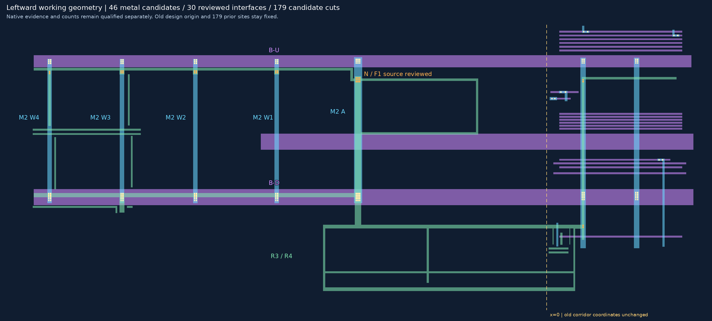
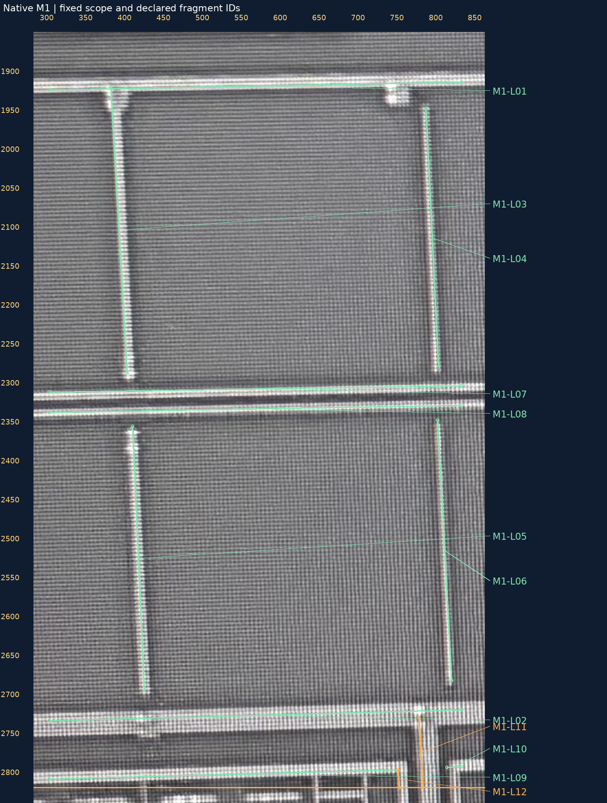
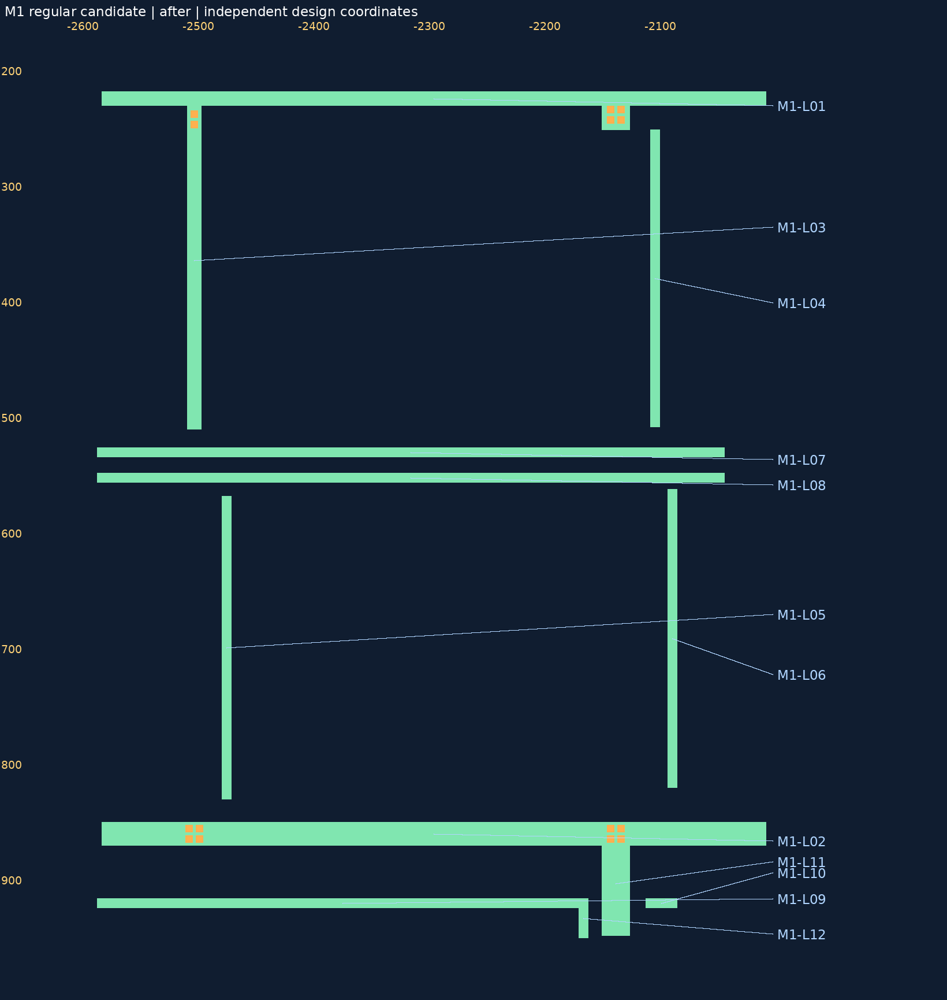

2026-10-30 · 定性工作几何基线 · 原生范围[300,1870,830,2820]
Q1：几何合理，无明显漏段。
Q2：几何合理，无明显遗漏。
本次通过L03–L12的10个新增/修订来源片段：竖支、细邻线、中部两横条、底部左右片段、主干向下出口及短回折。L01/L02上下主干作为不变上下文接续，没有扩展批准到整个C-M1-SPINE或其他照片区域。
声明清单12/12已有几何对应，本固定范围的定性覆盖复核已完成。46金属、30条已审局部接口、179设计候选孔完全保持，本轮只记录验收，不重建/移动几何，不增加VIA或网边。
范围出口仍不是物理终点；定性“无明显遗漏”不等于全照片穷尽、真实尺寸、PDK DRC、全网或正式GDS采用。物理孔数/源精密几何仍未知。
M1/V1/M2/V2/M3切换及原图 · SVG · 完整联合PNG

| 来源片段 | 内容 | 模型身份 | 当前复核状态 |
|---|---|---|---|
| M1-L01 | 上横条 | C-M1-SPINE | 不变上下文接续，本轮未另行裁决 |
| M1-L02 | 下宽横条 | C-M1-SPINE | 不变上下文接续，本轮未另行裁决 |
| M1-L03 | W4北侧竖支 | C-M1-SPINE | Q1/Q2通过，仅本片段定性几何 |
| M1-L04 | W3北侧细邻线 | W34-M1-L04 | Q1/Q2通过，仅本片段定性几何 |
| M1-L05 | W4南侧细竖线 | W34-M1-L05 | Q1/Q2通过，仅本片段定性几何 |
| M1-L06 | W3南侧细竖线 | W34-M1-L06 | Q1/Q2通过，仅本片段定性几何 |
| M1-L07 | 中部上细横条 | W34-M1-L07 | Q1/Q2通过，仅本片段定性几何 |
| M1-L08 | 中部下细横条 | W34-M1-L08 | Q1/Q2通过，仅本片段定性几何 |
| M1-L09 | 底部平行条左段 | W34-M1-L09 | Q1/Q2通过，仅本片段定性几何 |
| M1-L10 | 底部平行条右段 | W34-M1-L10 | Q1/Q2通过，仅本片段定性几何 |
| M1-L11 | W3下方主干竖向出口 | C-M1-SPINE | Q1/Q2通过，仅本片段定性几何 |
| M1-L12 | 底部左段的短回折 | W34-M1-L09 | Q1/Q2通过，仅本片段定性几何 |
已审接口、人审原话和原生照片保持；L09/L10分开、L11/L12按本范围出界处理。中部两横条没有被指派到旧L1/L2，全局网络归属仍保留未知。
各自使用独立坐标，没有层间投影。可切换原图标记与修订前后设计；旧送审文件保持冻结。


先清点W3/W4相邻的M2细支路，在本层原生搜索范围[280,1870,850,2840]逐项列来源、既有模型对应、遗漏/部分及未知接口，再补缺失几何。这个搜索范围不是从M1投影得到的精密边界。W3/W4旧V1/V2不重复审批，M3的B-U/B-D只作为既有承载上下文。
本轮只完成基线收口与下一范围规划，尚未把M2清单、几何或覆盖统计标成已完成。先做连续清单，再决定最少需要补查什么。
人审原话 · 已审基线 · 精确片段/局部块批准范围 · 已审覆盖清单 · 恢复请求 · 下一范围计划 · 本轮验证
本轮仅人审接续，模型完整字节/内容精确回放及来源/批准范围绑定核查通过，无程序/几何变化，未重跑上轮49+31项测试；上轮证据继续保留。浏览器交互未实测。geometry_adopted=false，source_to_design_transform=null，net_edges=[]，complete_network=false。README/site/gh-pages保持，无提交/推送。